Indholdsfortegnelse
- G1: Interaktion med musen
- G2: Rækkefølgens betydning
- G3: Forståelseopgave
- G4: if/else 1
- G5: if/else 2
- G6: && operatoren
- G7: mouseIsPressed
- G8: keyIsDown (piletaster)
- G9: keyIsDown (bogstaver)
- G10: mousePressed
- G11: Koordinatsystemet
- G12: Søgning i reference
- G13: for loop
- G14: Kode rækkefølge
- G15: Objekt bevægelse
- G16: Objekt retningsskift 1
- G17: Objekt retningsskift 2
- G18: Objekt retningsskift 3
- G19: random()
- G20: Opret objekt 1
- G21: Flyt objekt 1
- G22: Flyt objekt 2
- G23: Objekt referencer
- G24: Arrays
- G25: Objekter i arrays
- G26: Startværdier 1
- G27: Startværdier 2
- G28: Opret objekt 2
- G29: On/off knap
- G30: Fjern objekt fra skærm
- G31: Fjern objekt fra array
- G32: Objekt kommunikation 1
- G33: Følg cursor
- G34: Objekt kommunikation 2
- G35: map() funktionen
- G36: Peg mod punkt
- G37: Skyd med objekt
- G38: Stjernehimmel
Opgave G1 - Interaktion med musen
Lav et program så en hvid firkant med kraftig rød ramme følger musen. Baggrunden skal være grå. Herudover skal du skrive “mouseX:” samt værdien af mouseX ud til Console.
Afprøv funktionaliteten: https://editor.p5js.org/JensValdez/full/XE7hQNMRp
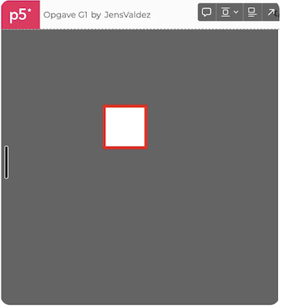
Hint
Søg på stroke, rect, strokeWeight, background og mouseX i reference f.eks. https://p5js.org/reference/#/p5/stroke
Hint
Hvis man tegner flere ting på skærmen, så bliver de tegnet i samme rækkefølge som de står i koden.
Hint
Man kan skrive til console således: console.log("mouseX: " + mouseX)
Løsningseksempel: https://editor.p5js.org/JensValdez/sketches/XE7hQNMRp
Hvad nu!!: Find en eller to at arbejde sammen med. I skal nu give hinanden en opgave hvor i bruger det i har lært. Alternativt kan i eksperimentere lidt eller lave det i har lyst til indtil i starter på næste opgave.
Opgave G2 - Rækkefølgens betydning for kodelinierne
Lav et program så en gul firkant uden ramme følger musen. Musens cursor skal være i midten af kassen. Baggrunden skal være lilla. Der skal også være blå ellipse og en fire sidet rød polygon. Den gule firkant skal bevæge sig ind over den blå ellipse men bag ved den røde polygon.
Afprøv funktionaliteten: https://editor.p5js.org/JensValdez/full/LWKm_2eTG
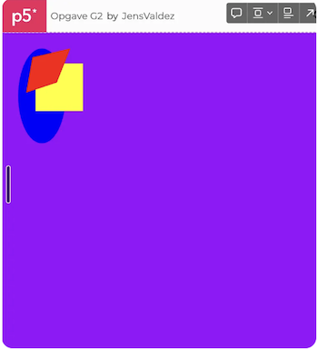
Hint
Se farve koder her: https://www.w3schools.com/colors/colors_picker.asp
Hint
Søg efter ellipse, noStroke og fill i reference
Hint
Slå op i reference (under “2D Primitives” (Shapes)) og find ud af hvad en polygon er og hvordan man tegner den.
Løsningseksempel: https://editor.p5js.org/JensValdez/sketches/LWKm_2eTG
Hvad nu!!: Find en eller to at arbejde sammen med. I skal nu give hinanden en opgave hvor i bruger det i har lært. Alternativt kan i eksperimentere lidt eller lave det i har lyst til indtil i starter på næste opgave.
Opgave G3 - Forståelseopgave
Lav et program så der er tre bolde som bevæger sig forskelligt afhængig af hvor langt til hhv. højre og venstre man har sin muse cursor. En blå bold skal have en fast y koordinat men følge muse cursoren i x koordinaten. En grøn bold skal have en fast y koordinat man x koordinaten skal kun være det halve af musens x koordinat. Den røde bold skal bevæge sig op og ned når man bevæger muse curoren til højre og venstre.
Afprøv funktionaliteten: https://editor.p5js.org/JensValdez/full/Z27mhTg_n
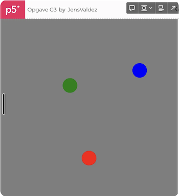
Løsningseksempel: https://editor.p5js.org/JensValdez/sketches/Z27mhTg_n
Hvad nu!!: Find en eller to at arbejde sammen med. I skal nu give hinanden en opgave hvor i bruger det i har lært. Alternativt kan i eksperimentere lidt eller lave det i har lyst til indtil i starter på næste opgave.
Opgave G4 - “if” og “else” 1
Lav et program hvor canvas er delt i to lige store dele. Når muse cursoren er over den venstre halvdel, så skal den venstre halvdel farves sort og når muse cursoren er over den højre halvdel, så skal den højre halvdel være sort (som vist nedenfor)
Afprøv funktionaliteten: https://editor.p5js.org/JensValdez/full/YhWEoypjP
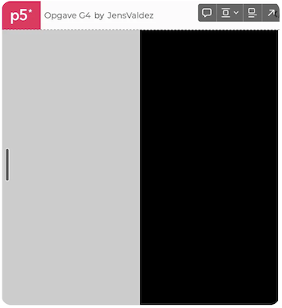
Hint
Søg efter if-else i reference
Hint
Når musen er i højre side, så tegn en sort kasse til højre, og når musen er i venstre side, så tegn en sort kasse til venstre.
Løsningseksempel: https://editor.p5js.org/JensValdez/sketches/YhWEoypjP
Hvad nu!!: Find en eller to at arbejde sammen med. I skal nu give hinanden en opgave hvor i bruger det i har lært. Alternativt kan i eksperimentere lidt eller lave det i har lyst til indtil i starter på næste opgave.
Opgave G5 - “if” og “else” 2
Løs samme opgave som Opgave G4 men hvor canvas er delt i tre lige store dele.
Afprøv funktionaliteten: https://editor.p5js.org/JensValdez/full/4vyCamh3i
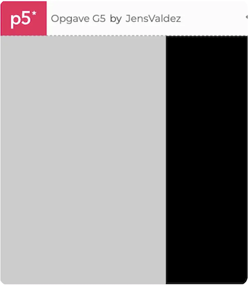
Hint
Man kan skrive:
if (mouseX < 100) {
…
} else if (mouseX < 200) {
…
}
else {
…
}Løsningseksempel: https://editor.p5js.org/JensValdez/sketches/4vyCamh3i
Opgave G6 - “&&” (og) operatoren
Tegn et canvas som vist her. Hvis muse cursoren er over firkanten i midten, så skal den farves hvid.
Afprøv funktionaliteten: https://editor.p5js.org/JensValdez/full/EBgr-HhtzW
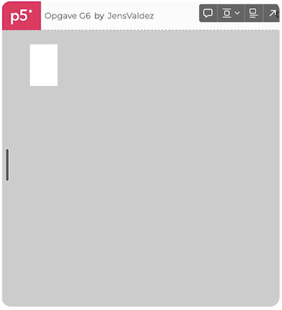
Hint
Hvis flere betingelser skal være opfyldt i en if statement kan man skrive:
if ((mouseX > 100) && (mouseY > 100)){Løsningseksempel: https://editor.p5js.org/JensValdez/sketches/EBgr-HhtzW
Hvad nu!!: Find en eller to at arbejde sammen med. I skal nu give hinanden en opgave hvor i bruger det i har lært. Alternativt kan i eksperimentere lidt eller lave det i har lyst til indtil i starter på næste opgave.
Opgave G7 - mouseIsPressed
Tegn et canvas som vist her. Hvis muse cursoren er over firkanten i midten og man samtidig holder muse knappen nede, så skal firkanten farves hvid
Afprøv funktionaliteten: https://editor.p5js.org/JensValdez/full/Sb_M_w-Fq
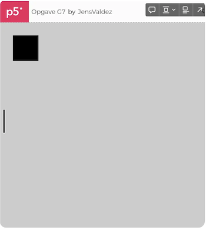
Hint
Søg på mouseIsPressed
Løsningseksempel: https://editor.p5js.org/JensValdez/sketches/Sb_M_w-Fq
Hvad nu!!: Find en eller to at arbejde sammen med. I skal nu give hinanden en opgave hvor i bruger det i har lært. Alternativt kan i eksperimentere lidt eller lave det i har lyst til indtil i starter på næste opgave.
Opgave G8 - keyIsDown (piletasterne)
Tegn et canvas som vist her. Hvis man holder venstre pilen på tastaturet nede, så skal firkanten bevæge sig til venstre (Husk at man skal klikke på canvas med musen før det bliver aktivt)
Afprøv funktionaliteten: https://editor.p5js.org/JensValdez/full/tB3LbyDVt
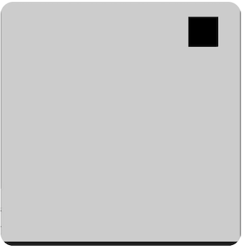
Hint
Søg på keyIsDown
Hint
Lav en variabel ved navn x som holder styr på x-koordinaten. Dette gøres ved på aller første linie at skrive “let x = 25”
Løsningseksempel: https://editor.p5js.org/JensValdez/sketches/tB3LbyDVt
Hvad nu!!: Find en eller to at arbejde sammen med. I skal nu give hinanden en opgave hvor i bruger det i har lært. Alternativt kan i eksperimentere lidt eller lave det i har lyst til indtil i starter på næste opgave.
Opgave G9 - keyIsDown (bogstaver)
Tegn et canvas som vist her. Hvis man holder ‘s’ nede, så skal firkanten blive større og hvis man holder ‘m’ nede, så skal den blive mindre (Husk at man skal klikke på canvas med musen før det bliver aktivt)
Afprøv funktionaliteten: https://editor.p5js.org/JensValdez/full/D1CYgx4Z8
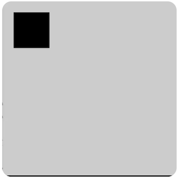
Hint
Søg på keyIsDown
Hint
Lave en variabel s som holder styr på størrelsen
Løsningseksempel: https://editor.p5js.org/JensValdez/sketches/D1CYgx4Z8
Hvad nu!!: Find en eller to at arbejde sammen med. I skal nu give hinanden en opgave hvor i bruger det i har lært. Alternativt kan i eksperimentere lidt eller lave det i har lyst til indtil i starter på næste opgave.
Opgave G10 - mousePressed
Tegn et canvas med sort baggrund. Hver gang man klikker med musen skal baggrunden blive lidt mere grå/hvid. Den skal ikke blive hurtig hvid bare fordi man holder muse knappen nede (Husk at man skal klikke på canvas med musen før det bliver aktivt).
Afprøv funktionaliteten: https://editor.p5js.org/JensValdez/full/o0ZSTNvl3
Hint
Søg på mousePressed
Løsningseksempel: https://editor.p5js.org/JensValdez/sketches/o0ZSTNvl3
Hvad nu!!: Find en eller to at arbejde sammen med. I skal nu give hinanden en opgave hvor i bruger det i har lært. Alternativt kan i eksperimentere lidt eller lave det i har lyst til indtil i starter på næste opgave.
Opgave G11 - Forståelse af koordinat systemet
Tegn en trekant der fylder en fjerdedel af canvasa
Løsningseksempel: https://editor.p5js.org/JensValdez/sketches/-KfaVIM-E
Note: Husk at tegne koordinatsystemet op først.
Opgave G12 - Søgning i reference
Tegn tre cirkler ved siden af hinanden som bliver mere og mere gennemsigtige
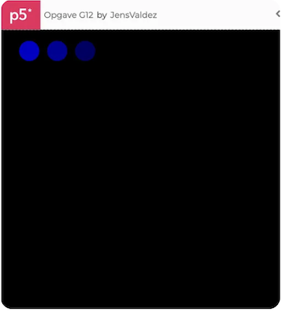
Hint
I reference står følgende syntaks for fill: fill(v1, v2, v3, [alpha]) hvilket betyder at den fjerde parameter (alpha) er valgfri. Den skal i spil her.
Løsningseksempel: https://editor.p5js.org/JensValdez/sketches/EfwBXMShM
Hvad nu!!: Find en eller to at arbejde sammen med. I skal nu give hinanden en opgave hvor i bruger det i har lært. Alternativt kan i eksperimentere lidt eller lave det i har lyst til indtil i starter på næste opgave.
Opgave G13 - for loop
Byg videre på opgave G12. Tegn 5 cirker ved siden af hinanden som bliver mere og mere gennemsigtige ved brug af et for loop. Se https://p5js.org/reference/#/p5/for i reference for syntaksen.
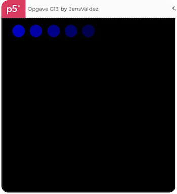
Løsningseksempel: https://editor.p5js.org/JensValdez/sketches/f4bPmZLeu
Hvad nu!!: Find en eller to at arbejde sammen med. I skal nu give hinanden en opgave hvor i bruger det i har lært. Alternativt kan i eksperimentere lidt eller lave det i har lyst til indtil i starter på næste opgave.
Opgave G14 - Kode rækkefølgens betydning
Tegn en rød bold med kraftig grå ramme, to grønne bolde uden ramme og en stor tekst uden ramme hvor der står “Hello” med hvid skrift.
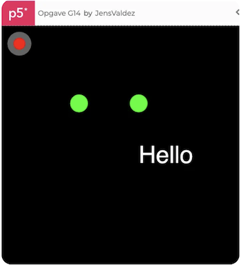
Hint
Søg på strokeWeight, textSize og text
Løsningseksempel: https://editor.p5js.org/JensValdez/sketches/YP9C6LjGp
Hvad nu!!: Find en eller to at arbejde sammen med. I skal nu give hinanden en opgave hvor i bruger det i har lært. Alternativt kan i eksperimentere lidt eller lave det i har lyst til indtil i starter på næste opgave.
Opgave G15 - Hvordan får man en bold til selv at bevæge sig
Tegn en blå bold der langsomt men sikkert af sig selv bevæger sig mod højre
Afprøv funktionaliteten: https://editor.p5js.org/JensValdez/full/xyr39IqsA
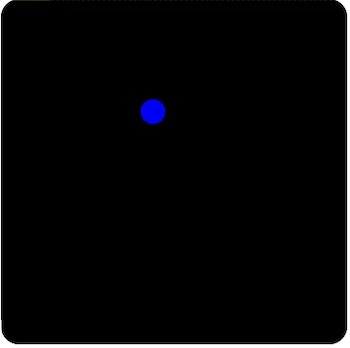
Hint
Søg efter width
Hint
Lav en variabel x og udfør “x = x + 1” i draw funktionen
Hint
x += 1” er det samme som “x = x + 1”
Løsningseksempel: https://editor.p5js.org/JensValdez/sketches/xyr39IqsA
Hvad nu!!: Find en eller to at arbejde sammen med. I skal nu give hinanden en opgave hvor i bruger det i har lært. Alternativt kan i eksperimentere lidt eller lave det i har lyst til indtil i starter på næste opgave.
Opgave G16 - Hvordan får man en bold til at vende rundt
Tilret løsningen fra Opgave G15, så bolden vender rundt og bevæger sig den anden vej når den når til højre side af canvas
Afprøv funktionaliteten: https://editor.p5js.org/JensValdez/full/Wx6ZGCq0I
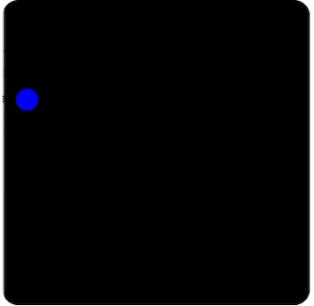
Hint
lav en variabel ved navn retning som starter med at være 1. Hvis bolden når ud over højre side, så skal retning ganges med minus en. Når vi lægger 1 (eller f.eks. 5) til x så ganger vi bare med retning således at fortegnet på det vi lægger til x skifter, dvs. at vi lægger et negativt tal til x når bolden bevæger sig med venstre
Løsningseksempel: https://editor.p5js.org/JensValdez/sketches/Wx6ZGCq0I
Hvad nu!!: Find en eller to at arbejde sammen med. I skal nu give hinanden en opgave hvor i bruger det i har lært. Alternativt kan i eksperimentere lidt eller lave det i har lyst til indtil i starter på næste opgave.
Opgave G17 - Hvordan får man en bold til at vende rundt 2
Tilret løsningen fra Opgave G16, så bolden også vender rundt og bevæger sig den anden vej når den når til venstre side af canvas
Afprøv funktionaliteten: https://editor.p5js.org/JensValdez/full/GSJEvLL87
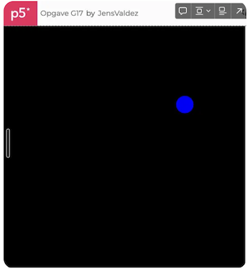
Hint
Opperatoren "||" betyder eller
Løsningseksempel: https://editor.p5js.org/JensValdez/sketches/GSJEvLL87
Hvad nu!!: Find en eller to at arbejde sammen med. I skal nu give hinanden en opgave hvor i bruger det i har lært. Alternativt kan i eksperimentere lidt eller lave det i har lyst til indtil i starter på næste opgave.
Opgave G18 - Hvordan får man en bold til at vende rundt 3
Tilret løsningen fra Opgave G17, så bolden også vender rundt og bevæger sig den anden vej når den når til toppen og bunden af canvas
Afprøv funktionaliteten: https://editor.p5js.org/JensValdez/full/4m_f_Yg41
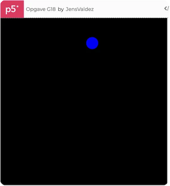
Løsningseksempel: https://editor.p5js.org/JensValdez/sketches/4m_f_Yg41
Hvad nu!!: Find en eller to at arbejde sammen med. I skal nu give hinanden en opgave hvor i bruger det i har lært. Alternativt kan i eksperimentere lidt eller lave det i har lyst til indtil i starter på næste opgave.
Opgave G19 - Brug af random (tilfældighedsgenerator)
Tegn en masse cirkler med tilfældig farve, størrelse og placering
Afprøv funktionaliteten: https://editor.p5js.org/JensValdez/full/4m_f_Yg41
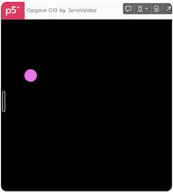
Hint
Søg på random
Løsningseksempel: https://editor.p5js.org/JensValdez/sketches/4m_f_Yg41
Hvad nu!!: Find en eller to at arbejde sammen med. I skal nu give hinanden en opgave hvor i bruger det i har lært. Alternativt kan i eksperimentere lidt eller lave det i har lyst til indtil i starter på næste opgave.
Opgave G20 - Hvordan laver man et objekt 1
Tegn en rød bold med en sort ramme. Bolden skal tegnes som et objekt.
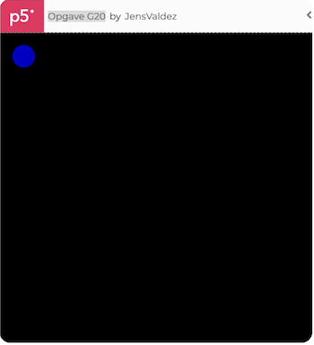
Løsningseksempel: https://editor.p5js.org/JensValdez/sketches/4m_f_Yg41
Hvad nu!!: Find en eller to at arbejde sammen med. I skal nu give hinanden en opgave hvor i bruger det i har lært. Alternativt kan i eksperimentere lidt eller lave det i har lyst til indtil i starter på næste opgave.
Opgave G21 - Hvordan får man et objekt til at flytte sig 1
Tilret løsningen fra Opgave G20 så bolden bevæger sig mod højre
Afprøv funktionaliteten: https://editor.p5js.org/JensValdez/full/4m_f_Yg41
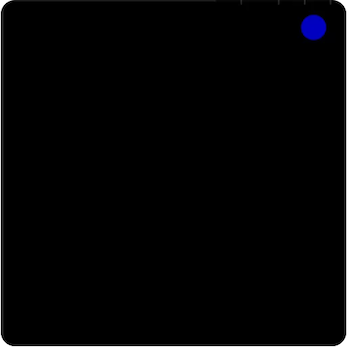
Løsningseksempel: https://editor.p5js.org/JensValdez/sketches/4m_f_Yg41
Hvad nu!!: Find en eller to at arbejde sammen med. I skal nu give hinanden en opgave hvor i bruger det i har lært. Alternativt kan i eksperimentere lidt eller lave det i har lyst til indtil i starter på næste opgave.
Opgave G22 - Hvordan får man et objekt til at flytte sig 2
Tilret løsningen fra Opgave G21 så bolden bevæger sig frem og tilbage
Afprøv funktionaliteten: https://editor.p5js.org/JensValdez/full/4m_f_Yg41
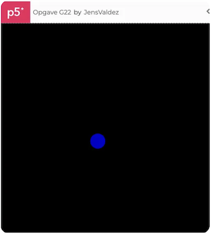
Løsningseksempel: https://editor.p5js.org/JensValdez/sketches/4m_f_Yg41
Hvad nu!!: Find en eller to at arbejde sammen med. I skal nu give hinanden en opgave hvor i bruger det i har lært. Alternativt kan i eksperimentere lidt eller lave det i har lyst til indtil i starter på næste opgave.
Opgave G23 - Hvordan virker det når en funktion modtager en reference til et
objekt og manipulerer det.
Tegn en rød bold med en sort ramme. Bolden skal tegnes som et objekt. Lav en funktion der hedder moveBall som tager et bold objekt som parameter og flytter det.
Afprøv funktionaliteten: https://editor.p5js.org/JensValdez/full/4m_f_Yg41
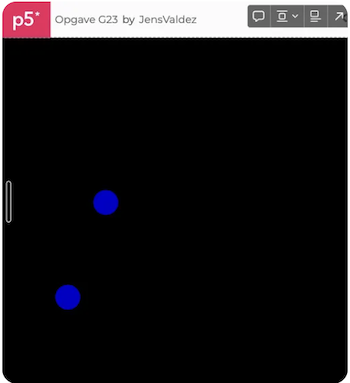
Løsningseksempel: https://editor.p5js.org/JensValdez/sketches/4m_f_Yg41
Hvad nu!!: Find en eller to at arbejde sammen med. I skal nu give hinanden en opgave hvor i bruger det i har lært. Alternativt kan i eksperimentere lidt eller lave det i har lyst til indtil i starter på næste opgave.
Opgave G24 - Hvordan virker et Array (tabel)
Tegn 5 cirkler ved siden af hinanden som bliver mere og mere gennemsigtige ved brug af et for loop og et array. Se https://p5js.org/reference/#/p5/Array i reference for syntaksen.
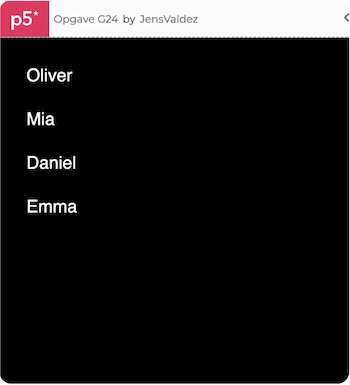
Løsningseksempel: https://editor.p5js.org/JensValdez/sketches/4m_f_Yg41
Hvad nu!!: Find en eller to at arbejde sammen med. I skal nu give hinanden en opgave hvor i bruger det i har lært. Alternativt kan i eksperimentere lidt eller lave det i har lyst til indtil i starter på næste opgave.
Opgave G25 - Hvordan putter man objekter i et Array
Tegn 5 bolde ved siden af hinanden. Boldene skal tegnes som objekter og puttes i et array.
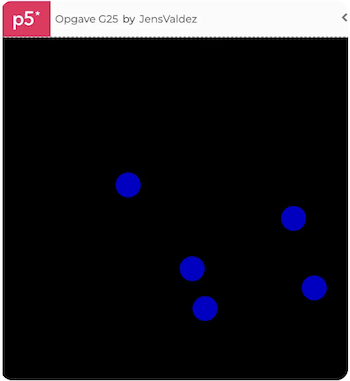
Løsningseksempel: https://editor.p5js.org/JensValdez/sketches/4m_f_Yg41
Hvad nu!!: Find en eller to at arbejde sammen med. I skal nu give hinanden en opgave hvor i bruger det i har lært. Alternativt kan i eksperimentere lidt eller lave det i har lyst til indtil i starter på næste opgave.
Opgave G26 - Hvordan giver man start værdier når et objekt oprettes 1
Tegn 5 bolde ved siden af hinanden. Boldene skal tegnes som objekter og puttes i et array. Boldene skal have forskellig farve.
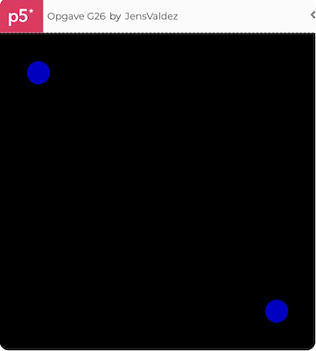
Løsningseksempel: https://editor.p5js.org/JensValdez/sketches/4m_f_Yg41
Hvad nu!!: Find en eller to at arbejde sammen med. I skal nu give hinanden en opgave hvor i bruger det i har lært. Alternativt kan i eksperimentere lidt eller lave det i har lyst til indtil i starter på næste opgave.
Opgave G27 - Hvordan giver man start værdier når et objekt oprettes 2
Tegn 5 bolde ved siden af hinanden. Boldene skal tegnes som objekter og puttes i et array. Boldene skal have forskellig farve og størrelse.
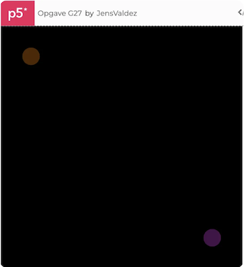
Løsningseksempel: https://editor.p5js.org/JensValdez/sketches/4m_f_Yg41
Hvad nu!!: Find en eller to at arbejde sammen med. I skal nu give hinanden en opgave hvor i bruger det i har lært. Alternativt kan i eksperimentere lidt eller lave det i har lyst til indtil i starter på næste opgave.
Opgave G28 - Hvordan laver man et objekt 2
Tegn en rød bold med en sort ramme. Bolden skal tegnes som et objekt. Bolden skal have en metode der hedder move som flytter bolden.
Afprøv funktionaliteten: https://editor.p5js.org/JensValdez/full/4m_f_Yg41
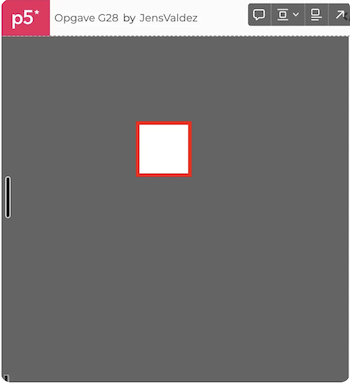
Løsningseksempel: https://editor.p5js.org/JensValdez/sketches/4m_f_Yg41
Hvad nu!!: Find en eller to at arbejde sammen med. I skal nu give hinanden en opgave hvor i bruger det i har lært. Alternativt kan i eksperimentere lidt eller lave det i har lyst til indtil i starter på næste opgave.
Opgave G29 - Hvordan laver man en on/off knap
Tegn en rød bold med en sort ramme. Bolden skal tegnes som et objekt. Bolden skal have en metode der hedder move som flytter bolden. Lav en knap der kan starte og stoppe bolden.
Afprøv funktionaliteten: https://editor.p5js.org/JensValdez/full/4m_f_Yg41
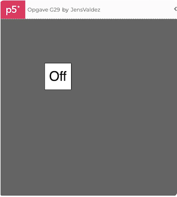
Løsningseksempel: https://editor.p5js.org/JensValdez/sketches/4m_f_Yg41
Hvad nu!!: Find en eller to at arbejde sammen med. I skal nu give hinanden en opgave hvor i bruger det i har lært. Alternativt kan i eksperimentere lidt eller lave det i har lyst til indtil i starter på næste opgave.
Opgave G30 - Hvordan fjerner man et objekt fra skærmen
Tegn en rød bold med en sort ramme. Bolden skal tegnes som et objekt. Bolden skal have en metode der hedder move som flytter bolden. Lav en knap der kan fjerne bolden fra skærmen.
Afprøv funktionaliteten: https://editor.p5js.org/JensValdez/full/4m_f_Yg41
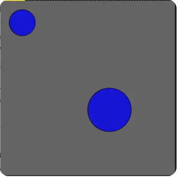
Løsningseksempel: https://editor.p5js.org/JensValdez/sketches/4m_f_Yg41
Hvad nu!!: Find en eller to at arbejde sammen med. I skal nu give hinanden en opgave hvor i bruger det i har lært. Alternativt kan i eksperimentere lidt eller lave det i har lyst til indtil i starter på næste opgave.
Opgave G31 - Hvordan fjerner man et objekt fra et Array
Tegn 5 bolde ved siden af hinanden. Boldene skal tegnes som objekter og puttes i et array. Boldene skal have forskellig farve og størrelse. Lav en knap der kan fjerne den midterste bold fra arrayet.
Afprøv funktionaliteten: https://editor.p5js.org/JensValdez/full/4m_f_Yg41
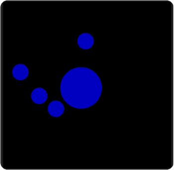
Løsningseksempel: https://editor.p5js.org/JensValdez/sketches/4m_f_Yg41
Hvad nu!!: Find en eller to at arbejde sammen med. I skal nu give hinanden en opgave hvor i bruger det i har lært. Alternativt kan i eksperimentere lidt eller lave det i har lyst til indtil i starter på næste opgave.
Opgave G32 - Hvordan kommunikerer to objekter med hinanden
Tegn to bolde. Den ene bold skal følge efter den anden bold.
Afprøv funktionaliteten: https://editor.p5js.org/JensValdez/full/4m_f_Yg41
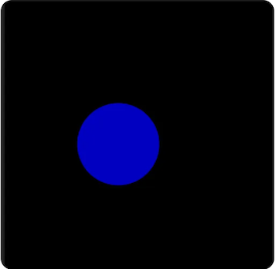
Løsningseksempel: https://editor.p5js.org/JensValdez/sketches/4m_f_Yg41
Hvad nu!!: Find en eller to at arbejde sammen med. I skal nu give hinanden en opgave hvor i bruger det i har lært. Alternativt kan i eksperimentere lidt eller lave det i har lyst til indtil i starter på næste opgave.
Opgave G33 - Lav et objekt der langsomt følger efter muse cursoren
Tegn en bold der langsomt følger efter muse cursoren.
Afprøv funktionaliteten: https://editor.p5js.org/JensValdez/full/4m_f_Yg41
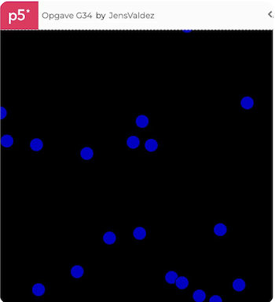
Løsningseksempel: https://editor.p5js.org/JensValdez/sketches/4m_f_Yg41
Hvad nu!!: Find en eller to at arbejde sammen med. I skal nu give hinanden en opgave hvor i bruger det i har lært. Alternativt kan i eksperimentere lidt eller lave det i har lyst til indtil i starter på næste opgave.
Opgave G34 - Hvordan kommunikerer mange objekter med hinanden
Tegn 5 bolde. Den første bold skal følge efter muse cursoren. Den anden bold skal følge efter den første bold. Den tredje bold skal følge efter den anden bold osv.
Afprøv funktionaliteten: https://editor.p5js.org/JensValdez/full/4m_f_Yg41
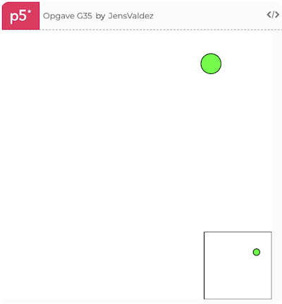
Løsningseksempel: https://editor.p5js.org/JensValdez/sketches/4m_f_Yg41
Hvad nu!!: Find en eller to at arbejde sammen med. I skal nu give hinanden en opgave hvor i bruger det i har lært. Alternativt kan i eksperimentere lidt eller lave det i har lyst til indtil i starter på næste opgave.
Opgave G35 - map funktionen
Tegn en bold der bevæger sig fra venstre mod højre. Bolden skal starte med at være lille og rød og ende med at være stor og blå.
Afprøv funktionaliteten: https://editor.p5js.org/JensValdez/full/4m_f_Yg41
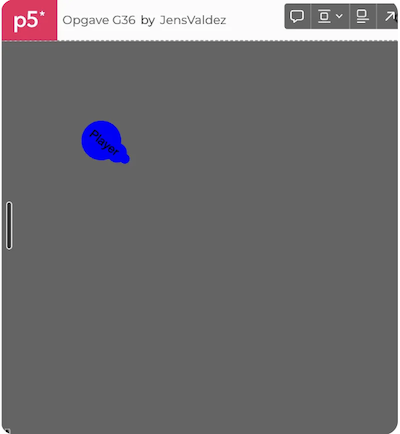
Løsningseksempel: https://editor.p5js.org/JensValdez/sketches/4m_f_Yg41
Hvad nu!!: Find en eller to at arbejde sammen med. I skal nu give hinanden en opgave hvor i bruger det i har lært. Alternativt kan i eksperimentere lidt eller lave det i har lyst til indtil i starter på næste opgave.
Opgave G36 - Pej et objekt mod et punkt
Tegn en pil der peger mod muse cursoren.
Afprøv funktionaliteten: https://editor.p5js.org/JensValdez/full/4m_f_Yg41
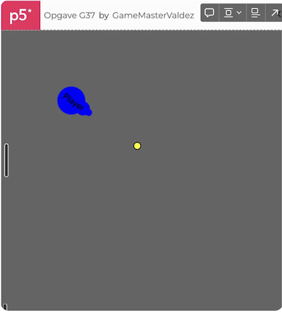
Løsningseksempel: https://editor.p5js.org/JensValdez/sketches/4m_f_Yg41
Hvad nu!!: Find en eller to at arbejde sammen med. I skal nu give hinanden en opgave hvor i bruger det i har lært. Alternativt kan i eksperimentere lidt eller lave det i har lyst til indtil i starter på næste opgave.
Opgave G37 - Hvordan får man et objekt til at skyde en lille bold afsted
Tegn en pil der peger mod muse cursoren. Når man klikker med musen skal der blive skudt en lille bold afsted i den retning pilen peger.
Afprøv funktionaliteten: https://editor.p5js.org/JensValdez/full/4m_f_Yg41
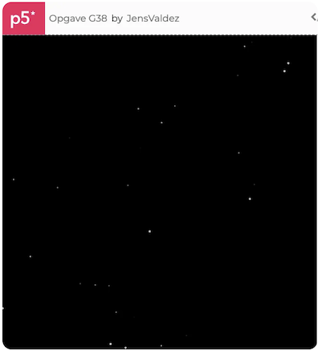
Løsningseksempel: https://editor.p5js.org/JensValdez/sketches/4m_f_Yg41
Hvad nu!!: Find en eller to at arbejde sammen med. I skal nu give hinanden en opgave hvor i bruger det i har lært. Alternativt kan i eksperimentere lidt eller lave det i har lyst til indtil i starter på næste opgave.
Opgave G38 - Lav en stjernehimmel
Tegn en stjernehimmel med 100 stjerner. Stjernerne skal have tilfældig størrelse og placering. Stjernerne skal blinke.
Afprøv funktionaliteten: https://editor.p5js.org/JensValdez/full/4m_f_Yg41
Løsningseksempel: https://editor.p5js.org/JensValdez/sketches/4m_f_Yg41
Hvad nu!!: Find en eller to at arbejde sammen med. I skal nu give hinanden en opgave hvor i bruger det i har lært. Alternativt kan i eksperimentere lidt eller lave det i har lyst til indtil i starter på næste opgave.